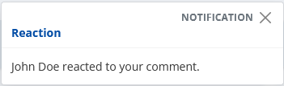
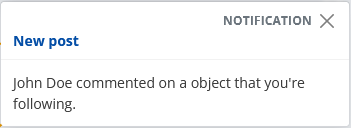
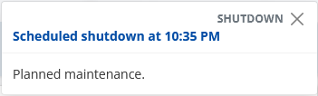

Real-time events
The real-time events are a core part of ERP.net. As the name suggests, these are events that are triggered in real time.
As an end-user experience, the real-time events may seem as "live notifications" (and in a matter of fact they are), but ERP.net makes a distinction between these terms.
Note
A notification is a "first-class citizen"- i.e. it's an entity (aggregate root). It lives in the database. Communities.Notifications Entity
On the other hand a real-time event is a non-persistent data unit and it's used for on-the-fly signaling of user-relevant events.
Each real-time event consists of a header, specifying its type, as well as a payload- the event data itself.
As a comparison to the notification definition above:
Note
A real-time event's payload MAY OR MAY NOT hold a notification. See below for more information on all types of real-time events.
A real-time event in a nutshell
Some of the key aspects:
- They're produced real time and don't depend on the client application.
- They're addressed to the concerned user (i.e. the recipient), regardless of whether it uses ERP.net Windows Client or Web Client.
- The real-time events are "broadcasted" to the target user no matter how many instances of the Windows Client or Web Client are opened.
- They're only created (and sent) when there's someone to receive them. I.e. the target user is online.
- The real-time events themselves aren't persistent data. They aren't stored in the database.
Use-case(s)
Obviously, they have one purpose- to notify you of something that concerns you.
Now
For example, if someone reacts to your comment:

Or someone comments on a object you're following (e.g. a specific document like an offer, sales order, etc):

What about if there's a planned maintenance?

Or several events at once:

Variety of types
The payload (i.e. the data), provided by the real-time events can be of the following different types:
| Code | Description |
|---|---|
| CM_REMINDER | Reminder (a.k.a alarm), related to an activity. |
| Incoming mail message. | |
| VOIP | Voice over IP. Incoming call. |
| SHUTDOWN | Warning of an upcoming shutdown event. |
| SYS_MSG | System message. |
| PERF | Performance measurement. This is often a system measurement for the duration of an operation. |
| NOT | Social interaction as a notification. For more information, check the separate notifications documentation topic. |
| WRN | System message. |